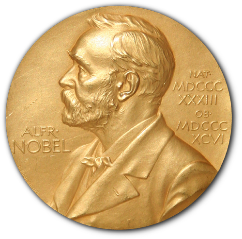
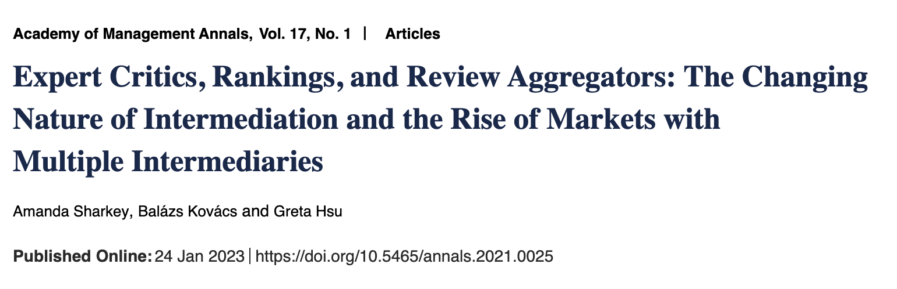
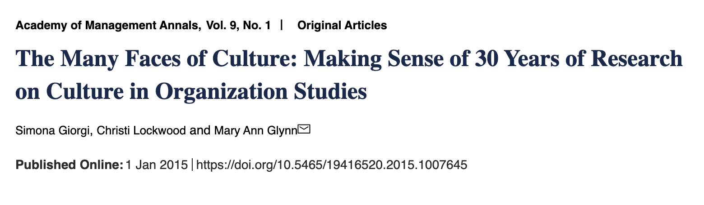
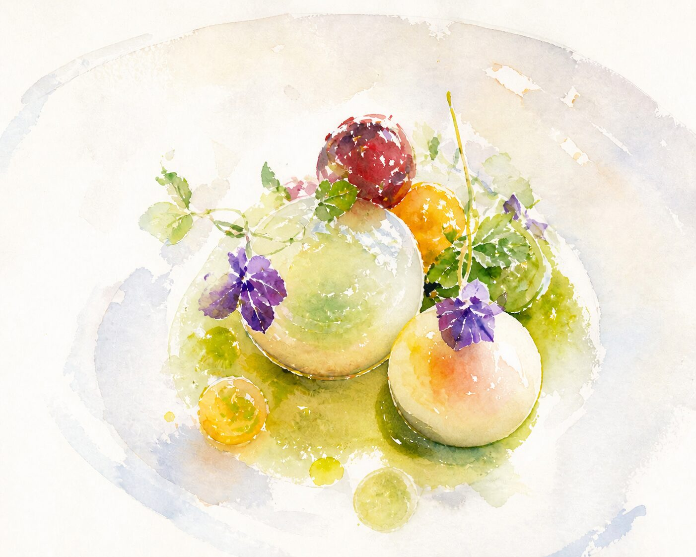
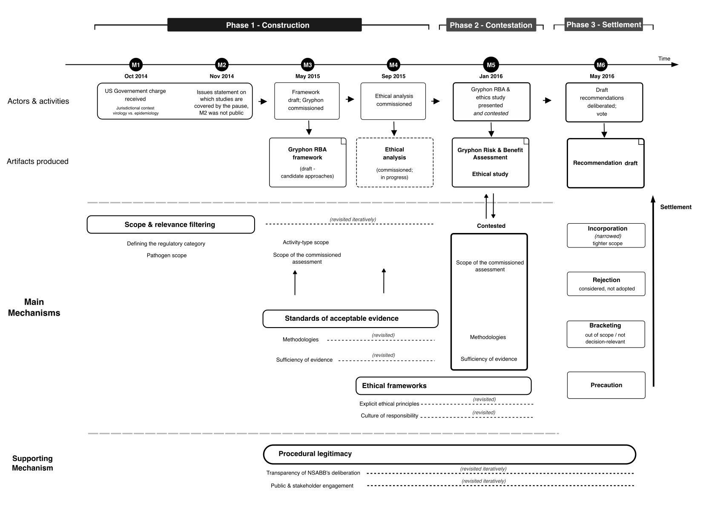

Dissertation Defense · 06 July 2026 · Lyon
Meaning
Structures
Structures
How judgment is shaped, evaluative frameworks are constructed, and institutions persist.
Parham Ashur
PHD CANDIDATE · EMLYON BUSINESS SCHOOL
02 / 17
Dissertation Committee
Supervisors
Bernard Forgues
emlyon business school
Christof Brandtner
emlyon business school
Giada Di Stefano
Bocconi University
External Examiners
Renate E. Meyer
WU Vienna University of Economics and Business
Ana Aranda
University of Amsterdam
03 / 17
04 / 17
Meaning structures are patterns of relationships among cultural elements that have become collectively held and durable. They are how we recognize, often without being told, what counts as a fair price, a good neighbor, a real apology, or a promise kept.
Swidler · Mohr et al. · Meyer & Höllerer · Berger & Luckmann
05 / 17
Why this matters now
We live in an evaluative society.
For a century, experts set what counts as good, and audiences inherited the criteria. Now platforms let millions judge the same objects beside them, yet either way the framework produces the worth it appears to measure.
Espeland & Sauder 2007 · Karpik 2010 · Brandtner 2017
In newer domains, from pandemics to dual-use biology, the criteria are unsettled and contested. They have to be built before any claim can be judged.
Patriotta et al. 2025 · Vaara et al. 2024
And once criteria harden into institutions, they turn invisible, taken for granted as how things simply are. The puzzle becomes how they endure across generations of change.
Berger & Luckmann 1966 · Dacin et al. 2010
06 / 17
The construct
Meaning structures in organizational and institutional life.
Justifications, evaluative frameworks, and institutions are all meaning structures: shared, durable systems of categories and relations that people mobilize to judge, construct into new frameworks, and reproduce so they last.
It enables
It makes evaluation possible.
It sorts
It sorts what is allowed to enter.
Podolny 2005 · Bowker & Star 1999 · Espeland & Stevens 1998
07 / 16
Three studies of meaning structures.
·
STUDY 01Social evaluation
STUDY 02Responsible governance
STUDY 03Social sustainability
Operation
Mobilized
Constructed
Sustained
Level
Individual
Collective
Institutional
09 / 16
Study 01
What Michelin Means
Justifications of (dis)agreement in haute cuisinewith Brandtner & Di Stefano
Expert intermediaries
Michelin
Gault & Millau
World’s 50 Best
Cannes
Oscars
Pulitzer

Nobel
Online platforms · lay voices
Yelp

Google Reviews
TripAdvisor
TheFork
Airbnb
IMDb
Goodreads
Research question
How do expert endorsements shape the justifications lay evaluators use?


Justificatory toolkits
Selective compliance
Finding
After the star, justifications shift away from Michelin’s criteria, concentrated among reviewers who disagree. They change the subject to price, portion, service.
Contribution
Selective compliance, a third path between deference and resistance. Dissenters don’t fight the Guide. They reach into alternative justificatory toolkits.

09 / 16
Study 02
Evaluation under Construction
How expert audiences evaluate contested professional claimssole-authored
Motivation
When criteria are contested and unsettled, what does it take to construct a framework that makes claims about dual-use biology, pandemics, or artificial intelligence assessable in the first place?
Research question
How do expert audiences construct evaluative frameworks for contested professional claims?
Theorization
Professional jurisdiction research → how professions claim territory through theorization and institutional rhetoric. Evaluation research → how evaluators apply existing standards. But what happens when standards are contested?
Abbott 1988 · Gieryn 1983 · Kornberger et al. 2015, 2017
Finding
Tracing the U.S. NSABB on gain-of-function research, three mechanisms are deployed and resolve eleven contested claims through four settlement modes: narrowing, bracketing, rejection, precaution.
10 / 16

11 / 16
Study 02
Evaluation under Construction
Contribution
To jurisdiction theory: evaluative frameworks are not given; they are assembled before any claim can be judged.
To evaluation research: the framework determines what is assessable and how.
To ethics: moral reasoning is not separate from evaluation but integral to it.
Karpik 2010 · Kornberger et al. 2015, 2017 · Espeland & Sauder 2007
12 / 16
Study 03
Dynamic Persistence of Institutions
Vienna’s public housing, 1867–2009with Brandtner & Srinivasa Desikan · Organization Studies
Motivation
Ideas and meanings can last for centuries. The university has endured for nearly a thousand years, from its medieval origins to laboratory to online, holding its core meaning while every instrument around it changed. How do meaning structures achieve that kind of durability?
Research question
How do institutionalized meaning structures persist across long periods of change?
Theorization
Building on structural studies of meaning, we develop Dynamic Modeling of Discourse, tracking an institution and its instantiations as co-evolving patterns of meaning across 140 years.
Berger & Luckmann 1966 · Mohr 1998
Finding
Public housing endured not by staying the same but by re-instantiating: municipal construction → subsidies → tenant support, while its anchorage to welfare, planning, and health held.
Contribution
Theoretical: dynamic persistence.
Methodological: a toolkit capturing semantic drift and relational meaning structures over time.
Analytical: diagnostic measures to quantify institutional change for future hypothesis testing.
Berger & Luckmann 1966 · Meyer et al. 2021 · Dacin et al. 2010
13 / 16
Three studies of meaning structures.
·
STUDY 01Social evaluation
STUDY 02Responsible governance
STUDY 03Social sustainability
Operation
Shaped
Constructed
Sustained
Level
Individual
Collective
Institutional
Research question
How do expert endorsements shape the justifications lay evaluators use?
How do expert audiences construct evaluative frameworks for contested professional claims?
How do institutionalized meaning structures persist across long periods of change?
Theoretical lens
Culture as toolkit · Orders of worth · Market intermediation
System of professions · Collective evaluative framework
Social construction of reality · New structuralism
Empirical context
6,000+ Google reviews of Michelin-starred French restaurants · 2014–2025
U.S. NSABB deliberations on gain-of-function research · 2014–2016
140-year corpus of Vienna administrative reports · 1867–2009
Method
BERTopic · word embeddings · difference-in-differences
Qualitative coding · archival analysis
Dynamic Topic Modeling · KL divergence
Mechanism
Selective compliance
Collective evaluative framework construction
Dynamic re-instantiation
14 / 16
A methodological contribution
Measuring a structure that lives in relations among elements and shifts over time.
Topic modeling
Inductively surfaces latent dimensions of meaning in large corpora. BERTopic · Dynamic Topic Modeling
Word embeddings
Turn theoretical constructs into continuous, measurable semantic distances. Consistency-with-expert · KL divergence
Causal inference and qualitative work complemented these tools. Grimmer et al. 2022 · Nelson 2020
15 / 16
Where the argument travels
Broader connections to the conversations in the literature, on the symbolic foundations of institutions, the construction of value, and the relation of structure and agency.
Symbolic foundations
Dynamic Modeling of Discourse renders the constitutive work the program describes empirically tractable across long durations (Mohr 1998; Mohr & Duquenne 1997; Breiger 2000). Future: extend to multimodal registers (Meyer et al. 2018; Jancsary et al. 2016).
Construction of value
The same evaluative device from two sides, under assembly in Study 2 and once installed in Study 1 (Beckert & Aspers 2011; Karpik 2010; Muniesa et al. 2007). Future: comparative cases in pandemics, financial risk, and AI governance (Fourcade & Healy 2017).
Structure–agency
Three operations of agency within meaning, selective compliance, framework construction, and dynamic re-instantiation (Sewell 1992; Emirbayer & Mische 1998; Swidler 1986). Future: experimental tests of selective compliance (Tost 2011).
16 / 16
Thank you
Questions?
With gratitude to my committee, coauthors, and colleagues.
Parham Ashur
06 JULY 2026 · EMLYON BUSINESS SCHOOL · LYON
Appendix · Study 01
Study 01 · Tables 2 & 3 + robustness
DV = consistency with Michelin criteria
Table 2 · Stacked DiD
| Variable | Model 1 | Model 2 |
|---|---|---|
| Treated × Post | −0.034* (0.015) | −0.059*** (0.018) |
| Agreement | · | −0.036*** (0.009) |
| T × P × Agreement | · | +0.030* (0.013) |
| FE · cluster-robust SE | ||
| Restaurant×Cohort · Cohort×Week | Y · Y | Y · Y |
N = 6,731 · 296 restaurants · 11 cohorts · ±8-week window · pre-trends χ²(7) = 6.80, p = 0.450
Table 3 · Subsample analysis (5 split rules)
| Low-agreement split | High β₁ | Δ β₂ | Low β₁+β₂ |
|---|---|---|---|
| Agreement < 0 | −0.025† | −0.049† | −0.074 |
| Agreement < 0.5 | −0.024† | −0.060** | −0.084 |
| Agreement < mean (0.856) | −0.026† | −0.011 n.s. | −0.037 |
| Agreement < median (0.991) | −0.032* | +0.012 n.s. | −0.020 |
| Stars 1–3 vs 4–5 | −0.026* | −0.062* | −0.088 |
† p<.10 · * p<.05 · ** p<.01 · *** p<.001
Robustness: Callaway & Sant’Anna (2021) ATT = +0.035 (CI [−0.096, +0.166]; CS less precise but its CI contains the stacked-DiD estimate; 4 of 11 cohorts identifiable). Adding review length and readability strengthens the result (Model 4: T×P β = −0.063, p<.001; triple +0.034, p = .008). Window robust at ±4, ±12, ±16 weeks. 14 topics chosen via BERTopic + STM diagnostics.
Appendix · Study 01
Study 01 · Robustness, estimators & windows
The result is not an estimator artifact
Treated × Post across estimators
| Estimator | T×P | SE / 95% CI |
|---|---|---|
| Stacked DiD (main, M1) | −0.034* | (0.015) |
| Stacked DiD + controls (M4) | −0.063*** | (0.018) |
| Sun & Abraham (2021) IW | −0.040*** | [−0.064, −0.017] |
| 2-years-prior control | −0.058** | N = 5,613 |
| Callaway & Sant’Anna (2021) | +0.035 | [−0.096, +0.166] |
Sun–Abraham is the staggered-robust counterpart to the design and confirms the headline. CS needs a dense ±52-week panel; only 4 of 11 cohorts identifiable, so it is imprecise, and its CI contains both other estimates.
Window robustness (M4)
| Window | T×P | pre-trend p |
|---|---|---|
| ±4 weeks | −0.078 | 0.143 |
| ±8 weeks (main) | −0.063 | 0.450 |
| ±12 weeks | −0.046 | 0.711 |
| ±16 weeks | −0.040 | 0.783 |
Effect strongest near the announcement, decays as the window widens; no differential pre-trend at any width.
DV construction. Consistency is cosine similarity to a Michelin-criteria vector; it is a separate pipeline from the DeBERTa sentiment used for Agreement, so the finding is not built into the measure. Across the keyword-count × rank-weight grid, the triple interaction is preserved in sign; the main spec (K = 7, r = 1.0) reproduces Table 2.
Appendix · Study 01 · Audience composition
Study 01 · Ruling out composition effects
Does the award change who reviews, or how reviewers justify?
Two observable attributes tested
Reviewer experience and review language (French vs. other) do not shift at the award (p = 0.74 and p = 0.98) and are nearly uncorrelated with consistency (|r| ≤ 0.04).
Das Gupta decomposition
Bounds the part of the decline attributable to observable mix within 0.003 of zero (95% bootstrap interval), against a total effect of −0.034. Almost the entire decline falls within reviewer types, not between them.
Geography rules out international influx
Decline concentrated outside Paris (−0.059, p = 0.001); Paris estimate indistinguishable from zero (+0.034, p = 0.32). Difference significant (p = 0.003).
Timing bounds unobservable composition
Tables reserved weeks in advance; reviews in the first weeks post-announcement come largely from diners who chose the restaurant before the star was public. Decline is concentrated exactly there: −0.064 in announcement weeks 0–2 (p = 0.006), vs. −0.015 from week 3 on (p = 0.34).
On the evidence available, the decline reflects a change in how the reviewing audience justifies its assessments rather than a change in its composition.
6,731 Google reviews · 296 first-starred restaurants · France, 2014–2025 · Das Gupta 1993
Appendix · Study 02
Study 02 · Sample frame & coding
NSABB 2014–2016
Sampling frame
Full universe of NSABB materials, October 2014 to May 2016: five meeting transcripts of six meetings (the November 2014 session has no public video record), Gryphon’s 1,009-page Risk & Benefit Analysis, the 42-page commissioned ethical study, and NSABB’s 90-page recommendation draft.
Two-step methodological pluralism
STM as a mapping device locates arenas of contestation (40 topics; speaker turn as document; expertise + role as covariates). Qualitative claim-tracing in NVivo carries the substantive analysis; 11 traceable claims.
Documentary triangulation
Each claim’s outcome cross-validated against Gryphon’s RBA and NSABB’s recommendation draft, not solely against meeting talk.
Audit trail · single-author design
Open coding in NVivo with iterative recoding of a subset of meetings; coding decisions and exemplars preserved in analytic memos. No second coder; the audit trail is the reliability instrument.
Single-case scope
NSABB is one case in a specific governance setting with a clearly articulated mandate. The contribution is theoretical, not statistical, generalization.
Appendix · Study 02
Study 02 · Eleven claims, four settlement modes
One framework, differentiated work
Settlement modes · representative claims
Narrowing & incorporation
Scope claims. The board narrowed the regulatory category, folding the in-scope portion into the recommendation.
Bracketing
Insufficient-evidence claims. Labs are safe to conduct GoF (lab-accident data gap); existing oversight is adequate (no direct comparative-international evidence).
Rejection
Alternative approaches considered and not adopted.
Precaution
GoF carries pandemic-scale risk (Claim 11). Stakes exceed what the evidence could decide; resolved as a question of principle.
One claim through three phases
“Laboratories are safe to conduct GoF research.”
CONSTRUCTIONThe standards mechanism sets what counts as acceptable evidence on laboratory safety.
CONTESTATIONIn public comment (M5), Megan Palmer flags “a significant dearth of data … notably lab accidents.”
SETTLEMENTBracketed. Acknowledged as a data gap and folded into the recommendation without being resolved on the evidence.
Procedural legitimacy (transparency, stakeholder engagement) runs across all three phases and gives the framework standing to bind.
Appendix · Study 02 · The claims ledger
Study 02 · Reading the ledger
Mechanisms · settlement · actors
Eleven claims pass through four mechanisms, are settled in one of four modes, and are worked by four groups of actors.
Four mechanisms
Scope (S)
What falls within the board’s purview.
Evidence (E)
What counts as sufficient, and where the data runs out.
Ethics (T)
Substantive judgment where quantification reaches its limit.
Procedural legitimacy (P)
Transparency and engagement that give the framework standing to bind.
Four settlement modes
Narrowing & incorporation
Accepted in narrowed form, folded into the recommendation under the GOFROC category.
Bracketing
Set aside as out of scope or insufficiently evidenced; flagged for future work.
Rejection
Opposed by the evidence and contradicted in the recommendation’s findings.
Precaution
Stakes the evidence cannot decide; handled through ethical principle.
Four actor groups
Experts making the case
Virologists and epidemiologists advancing competing claims.
Decision group
NSABB voting members and working group who built the framework.
Commissioned assessors
Gryphon Scientific (RBA) and Selgelid & Wolf (ethics study).
Public commenters
Scientists, analysts, and advocates during comment periods.
Appendix · Study 02 · The claims ledger
Study 02 · Claims × mechanisms × settlement
Eleven claims, one framework
#
Claim
Init
Scope (S)
Evidence (E)
Ethics (T)
Settlement
01
GoF yields scientific progress
VIR
Narrowed to GOFROC
Qualitative; benefits hard to quantify
Threshold: benefit must justify risk
Narrowing
02
GoF helps vaccine production
VIR
Within GOFROC
Qualitative (Gryphon)
Threshold; equity concern
Narrowing
03
Jurisdiction is highly regulated
VIR
In scope
Tested → found inadequate
Not an ethical claim
Rejection
04
Moratorium harms GoF research
VIR
Filtered out
Not evaluated
Not evaluated
Bracketing
05
GoF happens in nature
VIR
Filtered out
Not evaluated as standalone
Connects to benefit assessment
Bracketing
06
Laboratories are safe for GoF
VIR
In scope
Data gap → comparative design
Culture of responsibility
Narrowing
07
Not doing GoF is risky
VIR
In scope (inverse risk)
Counterfactual; hard to quantify
Case-by-case evaluation
Narrowing
08
GoF needed for surveillance
VIR
Within GOFROC
Qualitative
Threshold principle
Narrowing
09
GoF has long-term benefits
VIR
Filtered out
Not evaluated; horizon uncertain
Not evaluated
Bracketing
10
Alternatives can replace GoF
EPI
In scope (challenges necessity)
Opposed; substitutability unproven
Proportionality
Rejection
11
GoF is high risk (pandemic)
EPI
Central object of evaluation
Quantitative risk modeling
Precaution, Finding 5
Precaution
Initiator: VIR virology · EPI epidemiology. The two challenge claims (10, 11) originate outside virology. Source: claims ledger, GOFROC analysis
Appendix · Study 02 · The claims ledger
Study 02 · Claims × actor roles
Who did what to each claim
#
Claim
Experts (case)
Decision group
Assessors (Gryphon)
Public
01
GoF yields scientific progress
Advanced across M1–M5; Kawaoka read full RBA
Narrowed to GOFROC; accepted in narrowed form
~80% of page count on benefit assessment
Limited engagement
02
GoF helps vaccine production
Vaccine-yield as strongest benefit case
Accepted as legitimate benefit
Documented; flagged global-equity gap
Some support
03
Jurisdiction is highly regulated
Argued existing oversight sufficient
Rejected, Finding 3: oversight not sufficient
Opposed; found safety non-standardized
Palmer flags lab-accident data gap
04
Moratorium harms GoF research
Raised chilling effects on researchers
Treated as not decision-relevant
Not assessed
Some raised it
05
GoF happens in nature
Cited natural evolution for research
Did not adopt
Natural ≠ artificial for benefit
Limited
06
Laboratories are safe for GoF
Claimed safety record; EU Class III
Accepted conditional safety + oversight
“Culture of biosafety we can’t quantify”
Palmer, data dearth (M5)
07
Not doing GoF is risky
Osterholm, Imperiale: inaction carries risk
Folded into threshold principle
No nature evidence → data can’t be used
Limited engagement
08
GoF needed for surveillance
Presented surveillance as key application
Accepted in narrowed form
Qualitative; same constraints
Some support
09
GoF has long-term benefits
Raised foundational long-term science
Set aside
5-yr horizon misses later benefits
Limited
10
Alternatives can replace GoF
Lipsitch: alternatives could suffice
Not adopted; GOFROC necessary
GoF has some unique contributions
Commenters on both sides
11
GoF is high risk (pandemic)
Lipsitch, Osterholm advance pandemic risk
GOFROC category + precautionary default
Modeled; flagged coronavirus under-indexing
Palmer; Fidler, global ethics
Appendix · Study 03
Study 03 · DTM specification & robustness
Brandtner et al. 2025 · Organization Studies
Persistence and drift patterns are not artifacts of corpus or method.
Number of topics
Topic count via semantic coherence + exclusivity. 32 topics over 14 periods reported; persistence-with-evolution signature recurs across alternative k.
Chain variance
Re-estimated above and below 0.10. Cross-topic comparisons unaffected; chain variance shifts every topic equally.
Directionality
Backward from 1997–2009 (reported) vs forward from Red Vienna onward. Comparable signatures.
Stemming
Unstemmed German corpus gives almost identical KL distances. Stemming retained for interpretability.
STM cross-validation
Conventional STM (topic identity fixed) confirms public housing’s prevalence trajectory. STM and DTM converge.
Counterfactual topics
Cemetery persists without evolving; Austro-Hungarian → European affairs (loses attributes); electricity stabilizes mid-century. Public housing’s persistence-with-evolution is distinctive.